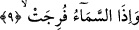
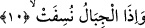
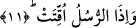

8. Yıldızların ışığı söndürüldüğü,
Yıldızların bizzat varlıkları silinip yok edildiği zaman. Bu âyette geçen “tams” kökü
“herhangi bir şeye delâlet eden eserin silinmesi” demektir. Burada uygun mânâ budur.
Çünkü böyle bir mânâ verdiğimizde, İnfitar sûresindeki âyetle uyumlu bir mânâ olur.
Zira Allah orada “yıldızlar döküldüğü zaman”. (el-İnfitar, 82/2) ifâdesini kullanıyor.
Ancak âyetteki yıldızların söndürülmesi ifâdesi, “yıldızların ışıkları söndürüldüğü
zaman” şeklinde de anlaşılabilir. Ancak birinci anlam daha uygundur. Çünkü birinci
anlamda “ışık” kelimesi gibi gizli bir kelime bulmaya ihtiyaç yoktur.
Bu âyet-i kerîmeye, “yıldızların haberi dürüldüğü ve gizlendiği zaman” şeklinde bir
anlam vermek de mümkündür. Ancak bu üç ihtimalden birincisi daha uygundur. Âyetin
anlamı şöyledir: Yıldızlar söndürüldüğü zaman size vaad edilenler meydana gelecektir.
Ya da yıldızlar söndürüldüğü zaman dirileceksiniz veya yaptıklarınızın karşılığını
göreceksiniz. Bu âyet-i kerîmede iza’nın cevabının hazfedilmesinin sebebi bundan
önceki âyette yer alan “size vaad edilen şeyler mutlaka olacaktır” ifâdesinin buna
delâlet etmesinden dolayıdır.
Bu son âyet-i kerîme insandaki zâhirî ve bâtınî on duygu yıldızlarının, hakîkat güneşi
doğduğu zaman hakîkatleri idrak etmekten âciz kalacağına işâret etmektedir.
9. Gökkubbe yarıldığı,
“Gök” Rahman’ın korkusundan “yarıldığı zaman” ve gökyüzünde, Allah’ın “onda
hiçbir çatlak da yok” (Kaf, 50/6) âyeti ile olamayacağını ifâde buyurduğu yarık ve
çatlaklar meydana geldiği zaman, gök bu yarılma ile kapı kapı olduğu zaman...
Bu âyet-i kerîmede Allah’a dâir tecellîler ardarda geldiği zaman ruhların semâlarının
yarılacağına ve paramparça olacağına işâret vardır.
10. Dağlar ufalanıp savrulduğu ve
Kalburda elenen taneler gibi olduğu “zaman,”
Bu âyet-i kerîmede muâyene “gözle görme” ve müşâhede başladığı zaman, fâsid ve
bozuk vehimlerle hayal dağlarının yok olup gideceğine işâretler vardır.